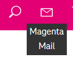
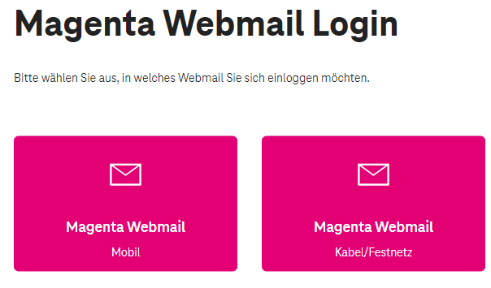

Bekommt man als Kunde von Magenta keine Mailadresse? Konkret geht es mir eher um einen SMTP Zugang, da ich durch den Umstieg bei einigen Devices den Server ändern muss, wenn ich den alten Vertrag kündige.
Wenn ich mich versuche beim Webmail mit meinen Kundendaten anzumelden, dann bekomme ich nur einen Fehler, ich sollte mich an den Kundensupport wenden. Das geht doch sicher auch einfacher.
Hallo @hfichtinger ,
Betrifft es einen Zugang über Kabel oder mobil? Bei letzteren gibt es afaik keine E-Mail Adresse.
LG
Rexalius
Mobil. 5G. Wozu gibt es dann eine eigene Webmailloginseite für Mobiles Internet? Ist irgendwie ein Wiederpruch.


vor 25 Minuten schrieb hfichtinger:Mobil. 5G. Wozu gibt es dann eine eigene Webmailloginseite für Mobiles Internet? Ist irgendwie ein Wiederpruch.
Was ich ich mich erinnern kann, wurde dieses Service früher auch für Mobil Kunden angeboten. Daher wird das "Logingfenster" für alt Kunden noch verfügbar sein.
vor 4 Stunden schrieb hfichtinger:Wenn ich mich versuche beim Webmail mit meinen Kundendaten anzumelden, dann bekomme ich nur einen Fehler, ich sollte mich an den Kundensupport wenden. Das geht doch sicher auch einfacher.
Am besten du kontaktierst den Kundensupport so wie angegeben. Vielleicht gibst du uns dann Bescheid ob es doch möglich ist.
Ich habe das selbe Problem, und der die Techniker oder Kundensupport konnten mir nicht helfen!
Hallo Manfred, bis Mai 2018 konnten Mobilfunk-Kunden bei ihren Verträgen eine *.tmo-Mailadresse anlegen, danach wurde dieser Service eingestellt. Die Weiternutzung der bereits bestehenden Webmailkonten ist natürlich möglich, genau dafür gibt es das Login-Fenster im Kundenportal Mein Magenta Mobil.
Ausführliche Informationen zum Thema Magenta Webmail Mobil findest du in den FAQ .
Fehler! E-Mail-Adresse/Passwort falsch.
Bitte versuchen Sie es erneut!
Das ist die antwort die Ich jedes mal bekomme.
Die E-Mail-Adresse ist aber 100% richtig und das Passwort habe Ich schon mehrmals geändert und stimmt auch.
Hallo Manfred, wir in der Community haben keinen Zugriff auf Kundendaten, daher ist für uns auch schwierig, konkret weiter zu helfen. Wir können leider nur Vermutungen anstellen. Wie ich sehe, hast du schon selber einen Thread zu deinem Thema erstellt - hier ging es ja darum, ob auch für neue Mobilfunk-Kunden das Webmail nutzbar ist.
Habe seit gestern einen neuen Handy und Kabelinternet Vertrag und keine E-Mail bekommen. Laut Shop Mitarbeiter gibt es keine E-Mails mehr, selbst bei einem Internet Paket. Bei meinem alten Vertrag hatte ich noch E-Mail. Finde das schon krass, dass hier Magenta spart. Bei jeden anderen Anbiete bekommt man E-Mail was auch dazugehören MUSS normal.